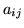
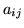

Let each spoken word be represented by a sequence of speech vectors or observations
 , defined as
, defined as
| (1.1) |
I
n HMM based speech recognition, it is assumed that the sequence of
observed speech vectors corresponding to each word is generated
by a Markov model as shown in Fig. [*].
A Markov model is a finite state machine which changes state
once every time unit and each time  that a state
that a state  is entered, a
speech vector
is generated from the probability density
. Furthermore, the transition from state
is entered, a
speech vector
is generated from the probability density
. Furthermore, the transition from state  to state
to state  is also probabilistic and is governed by the discrete probability .
Fig. [*] shows an example of this process where the six state
model moves through the state sequence
is also probabilistic and is governed by the discrete probability .
Fig. [*] shows an example of this process where the six state
model moves through the state sequence
 in
order to generate the sequence
in
order to generate the sequence
 to
. Notice that
in HTK, the entry and exit states of a HMM are non-emitting. This
is to facilitate the construction of composite models as explained in
more detail later.
to
. Notice that
in HTK, the entry and exit states of a HMM are non-emitting. This
is to facilitate the construction of composite models as explained in
more detail later.
The joint probability that
 is generated by the model
is generated by the model  moving
through the state sequence
moving
through the state sequence
 is calculated simply as the product of the transition
probabilities and the output probabilities. So for the state sequence
is calculated simply as the product of the transition
probabilities and the output probabilities. So for the state sequence  in
Fig. [*]
in
Fig. [*]
Given that  is unknown, the
required likelihood is computed
by summing over all possible state
sequences
, that is
is unknown, the
required likelihood is computed
by summing over all possible state
sequences
, that is
As an alternative to equation 1.5, the likelihood can be approximated by only considering the most likely state sequence, that is
Although the direct computation of equations 1.5 and 1.6
is not tractable, simple recursive procedures exist which allow
both quantities to be calculated very efficiently.
Before going any further, however, notice that if equation 1.2 is
computable then the recognition problem is solved. Given a set of models
corresponding to words  , equation 1.2 is
solved by using 1.3 and assuming that
, equation 1.2 is
solved by using 1.3 and assuming that
All this, of course, assumes that the parameters
 and
and
 are known for each model . Herein lies the
elegance and power of the HMM framework. Given a set of training examples
corresponding to a particular model, the parameters of that model can be
determined automatically by a robust and efficient re-estimation
procedure. Thus, provided that a sufficient number of representative
examples of each word can be collected then a HMM can be constructed
which implicitly models all of the many sources of variability inherent
in real speech. Fig. [*] summarises the use of HMMs
for isolated word recognition. Firstly, a
HMM is trained for each vocabulary word using a number of examples
of that word. In this case, the vocabulary consists of
just three words: ``one'', ``two'' and ``three''.
Secondly, to recognise some unknown word, the likelihood of
each model generating that word is calculated and the most likely
model identifies the word.
are known for each model . Herein lies the
elegance and power of the HMM framework. Given a set of training examples
corresponding to a particular model, the parameters of that model can be
determined automatically by a robust and efficient re-estimation
procedure. Thus, provided that a sufficient number of representative
examples of each word can be collected then a HMM can be constructed
which implicitly models all of the many sources of variability inherent
in real speech. Fig. [*] summarises the use of HMMs
for isolated word recognition. Firstly, a
HMM is trained for each vocabulary word using a number of examples
of that word. In this case, the vocabulary consists of
just three words: ``one'', ``two'' and ``three''.
Secondly, to recognise some unknown word, the likelihood of
each model generating that word is calculated and the most likely
model identifies the word.